tidyvpc 1.6.0
Quantitative Predictive Check (QPC)
The headline addition in 1.6.0 is the new
qpcstats() function, which computes a Quantitative
Predictive Check (QPC) score for continuous VPCs. Where a VPC
is normally assessed by eye, QPC produces a single numeric
qpc_score (lower is better) that
summarizes calibration, bias/drift, and sharpness, making it
straightforward to compare or automatically optimize models.
QPC is a post-processing step applied to an existing
tidyvpcobj after vpcstats(). The composite
score is reported alongside component penalties (coverage, MAE, drift,
sharpness, and the Winkler interval score).
library(tidyvpc)
#> tidyvpc is part of Certara.R!
#> Follow the link below to learn more about PMx R package development at Certara.
#> https://certara.github.io/R-Certara/
obs_data <- obs_data[MDV == 0]
sim_data <- sim_data[MDV == 0]
vpc <- observed(obs_data, x = TIME, y = DV) |>
simulated(sim_data, y = DV) |>
binless() |>
vpcstats() |>
qpcstats()
print(vpc)
#> VPC with 100 replicates
#> Stratified by:
#> QPC: qpc_score = 0.159 (lower is better)
#> Breakdown (0 = best):
#> median coverage penalty 0.000
#> tail coverage penalty 0.092
#> MAE penalty 0.221
#> drift penalty 0.409
#> sharpness penalty 0.272
#> interval penalty 0.391
#>
#> x qname y md lo hi
#> <num> <fctr> <num> <num> <num> <num>
#> 1: 0.2157624 q0.05 20.27050 18.70099 15.46726 22.76529
#> 2: 0.4694366 q0.05 26.85172 24.20164 20.90806 28.69981
#> 3: 0.8271844 q0.05 36.13299 32.25889 27.80422 37.28306
#> 4: 1.7724895 q0.05 47.97810 45.68455 39.37618 51.15900
#> 5: 1.7142415 q0.05 48.59415 46.13059 39.92622 51.83491
#> ---
#> 1646: 3.1146520 q0.95 187.64868 157.66057 135.21747 185.70608
#> 1647: 3.9526689 q0.95 162.26683 149.76519 128.25975 168.88196
#> 1648: 6.0247591 q0.95 119.55945 122.36560 105.29532 140.59213
#> 1649: 7.7967326 q0.95 103.60993 101.08928 88.41343 115.52899
#> 1650: 12.2981243 q0.95 63.09294 69.37852 61.51805 85.95328QPC also works with binning(), stratify(),
predcorrect(), and censoring(). For the full
methodology, weighting options, and worked examples, see the dedicated
vignette: vignette("tidyvpc_qpc").
Non-replicate simulated data support
tidyvpc now supports simulated data that is
not a 1:1 replicate of the observed data.
simulated() gains xsim and repl
arguments (to supply the simulated x-values and the replicate
identifier), and stratify() gains a data.sim
argument so strata can be supplied directly for the simulated data. Both
binning() and binless() are supported, and the
previous non-replicate hard errors are now warnings. You can toggle
tidyvpc-specific messages with
options("tidyvpc.verbose" = TRUE).
In the example below we construct a “rich” (non-replicate) simulated
dataset by interpolating simulated DV onto a fine
TIME grid per ID/REP, then fit a
non-replicate VPC.
library(data.table)
options("tidyvpc.verbose" = TRUE)
obs <- tidyvpc::obs_data[MDV == 0]
sim <- tidyvpc::sim_data[MDV == 0]
sim$GENDER <- rep(obs$GENDER, nrow(sim) / nrow(obs))
# Build a non-replicate ("rich") simulated dataset on a fine time grid
sim_rich <- sim[, {
ntime_seq <- seq(from = min(TIME), to = max(TIME), by = 0.01)
dv_interp <- approx(x = TIME, y = DV, xout = ntime_seq)$y
data.table(TIME = ntime_seq, DV = dv_interp, GENDER = GENDER[1])
}, by = .(ID, REP)]
vpc_non_rep <- observed(obs, x = TIME, yobs = DV) |>
simulated(sim_rich, xsim = TIME, ysim = DV, repl = REP) |>
binning(bin = "jenks", nbins = 5) |>
vpcstats()
plot(vpc_non_rep)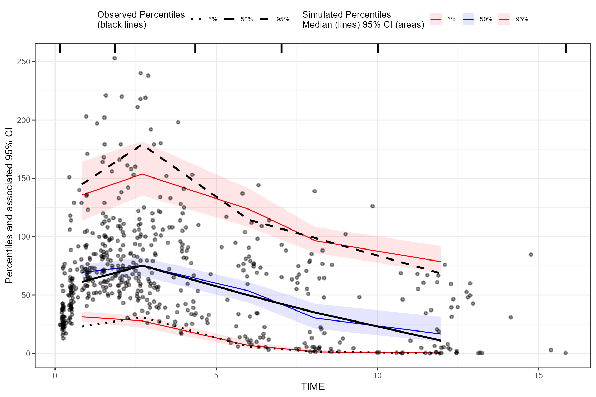
When the simulated data is not a replicate of the observed data, the
observed-data bins and strata are propagated to the simulated data.
Stratification on non-replicate simulated data uses the new
data.sim argument:
vpc_non_rep_strat <- observed(obs, x = TIME, yobs = DV) |>
simulated(sim_rich, xsim = TIME, ysim = DV, repl = REP) |>
stratify(~ GENDER, data.sim = sim_rich) |>
binning(bin = "jenks", nbins = 5) |>
vpcstats()
plot(vpc_non_rep_strat)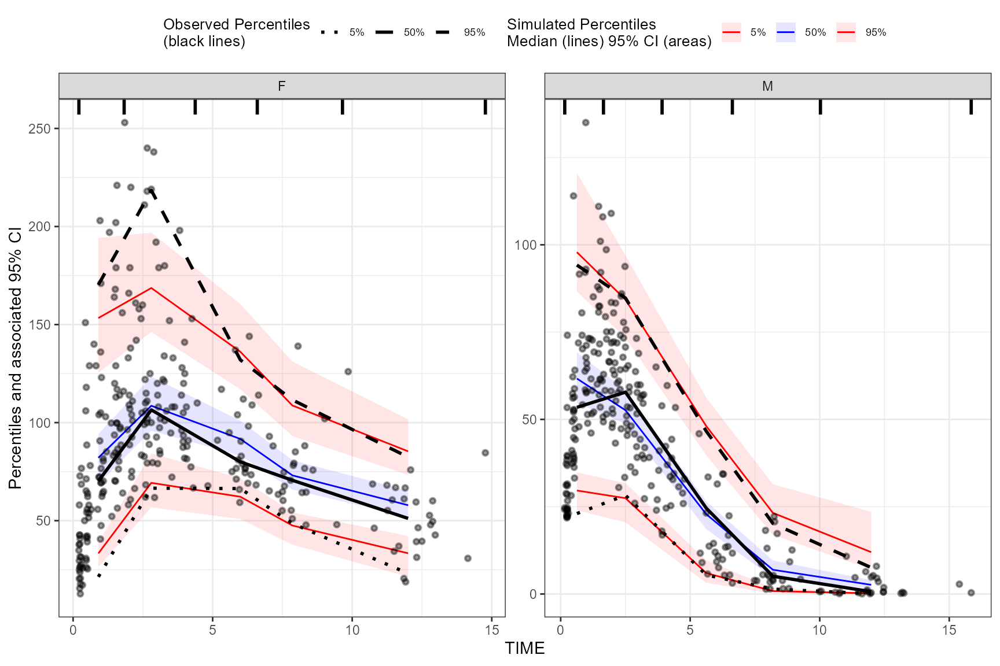
Customize censoring (BLQ/ALQ) plot colors
plot.tidyvpcobj() gains censoring.color and
censoring.fill arguments to customize the colors used in
the BLQ/ALQ percentage plots. censoring.color is a named
vector with observed and simulated entries
(controlling the line colors), while censoring.fill sets
the ribbon fill color.
obs_data$LLOQ <- obs_data[, ifelse(STUDY == "Study A", 50, 25)]
obs_data$ULOQ <- obs_data[, ifelse(STUDY == "Study A", 125, 100)]
vpc_cens <- observed(obs_data, x = TIME, y = DV) |>
simulated(sim_data, y = DV) |>
censoring(blq = DV < LLOQ, lloq = LLOQ, alq = DV > ULOQ, uloq = ULOQ) |>
stratify(~ STUDY) |>
binning(bin = NTIME) |>
vpcstats(qpred = c(0.1, 0.5, 0.9))
plot(vpc_cens, censoring.type = "blq", censoring.output = "grid",
censoring.color = c(observed = "black", simulated = "blue"),
censoring.fill = "blue")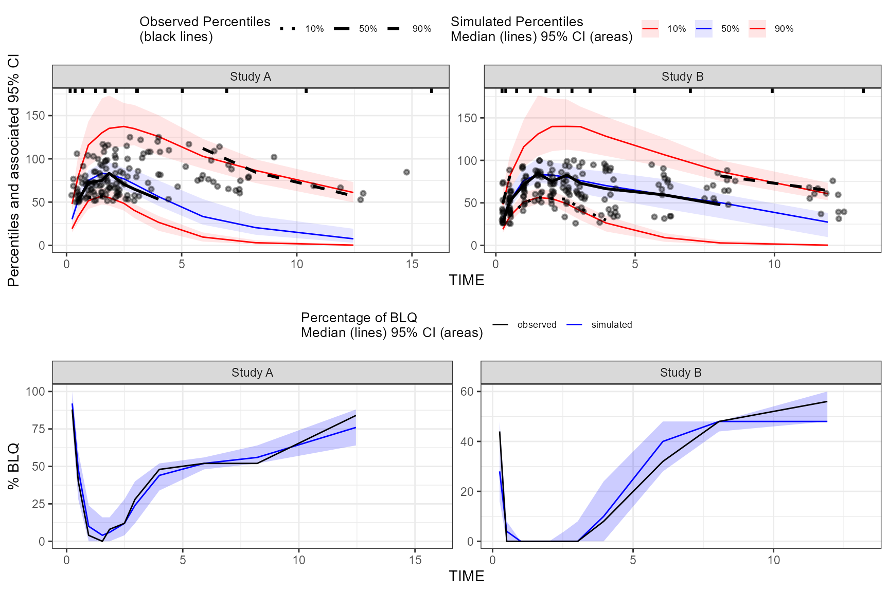
tidyvpc 1.5.2
Variability correction for prediction-corrected VPC
(varcorr)
predcorrect() gains a varcorr logical
argument (defaults to FALSE) that applies variability
correction to the prediction-corrected dependent variable. When enabled,
the correction adds a ypcvc column that is used for the VPC
summaries.
obs_data$PRED <- sim_data[REP == 1, PRED]
vpc <- observed(obs_data, x = TIME, y = DV) |>
simulated(sim_data, y = DV) |>
predcorrect(pred = PRED, varcorr = TRUE) |>
binning(bin = NTIME) |>
vpcstats()
plot(vpc)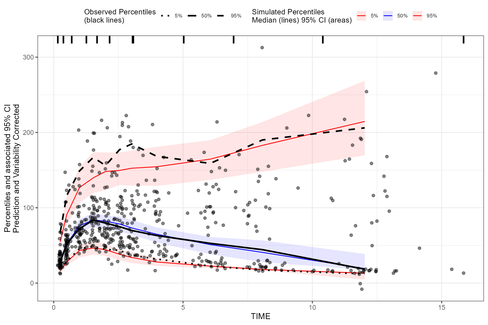
tidyvpc 1.5.0
Plot Percentage of BLQ and/or ALQ
For VPC with censoring, users can supply additional arguments to
plot.tidyvpcobj e.g., censoring.type (options
are 'none', 'blq', 'alq', or
'both', defaults to 'none') and
censoring.output (options are 'grid' or
'list', defaults to 'grid').
If censoring.output = 'grid', the plots will be arranged
into single grid plot. Users may pass additional arguments via ellipsis
to egg::ggarrange e.g., nrow = 1,
ncol = 2 in order to customize plots in grid
arrangement.
If censoring.output = 'list', the resulting plots will
be returned individually as elements in list.
Example usage is below:
library(tidyvpc)
obs_data <- obs_data[MDV == 0]
sim_data <- sim_data[MDV == 0]
obs_data$LLOQ <- obs_data[, ifelse(STUDY == "Study A", 50, 25)]
obs_data$ULOQ <- obs_data[, ifelse(STUDY == "Study A", 125, 100)]
vpc <- observed(obs_data, x = TIME, y = DV) |>
simulated(sim_data, y = DV) |>
censoring(blq = DV < LLOQ, lloq = LLOQ, alq = DV > ULOQ, uloq = ULOQ) |>
stratify(~ STUDY) |>
binning(bin = NTIME) |>
vpcstats(qpred = c(0.1, 0.5, 0.9))If blq data, users may supply
censoring.type = "blq":
plot(vpc, censoring.type = "blq", censoring.output = "grid", facet.scales = "fixed")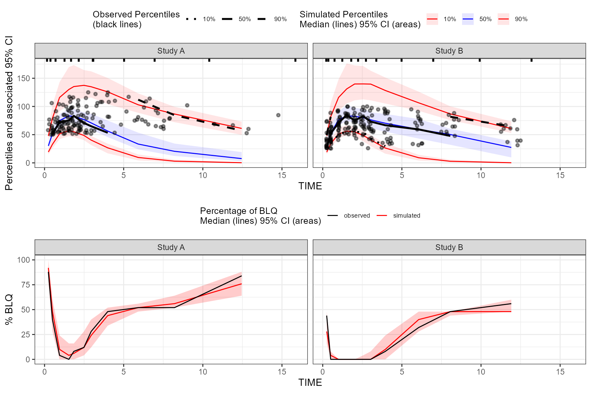
If alq data, users may supply
censoring.type = "alq":
plot(vpc, censoring.type = "alq", censoring.output = "grid", ncol = 2, nrow = 1)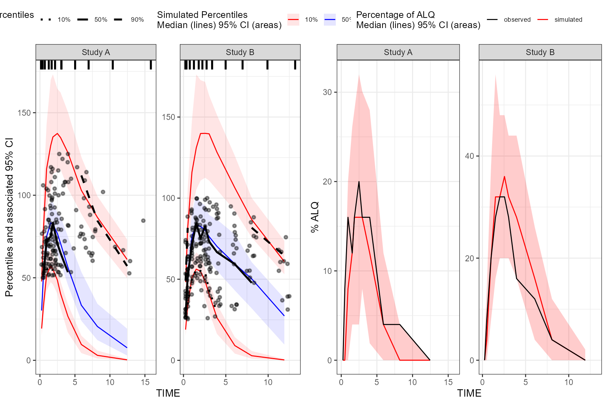
If both blq and alq data, users may supply
censoring.type = "both"
vpc_plots <- plot(vpc, censoring.type = "both", censoring.output = "list")By default, when censoring.tidyvpcobj is used, no
percentage blq/alq plots will be returned e.g., default for
censoring.type = 'none'. If users specify
censoring.type='both' and only blq censoring was performed,
for example, they will receive an error stating e.g.,
pctalq data.frame was not found in tidyvpcobj. Use censoring() to create censored data for plotting alq.
tidyvpc 1.4.0
Additional Binning Methods
The following additional binning methods from classInt
have been made available in tidyvpc.
see ?classIntervals ‘style’ descriptions for applicable
arguments for each selected binning method.
headtails
observed(obs_data, x = TIME, y = DV) |>
simulated(sim_data, y = DV) |>
binning(bin = "headtails") |>
plot()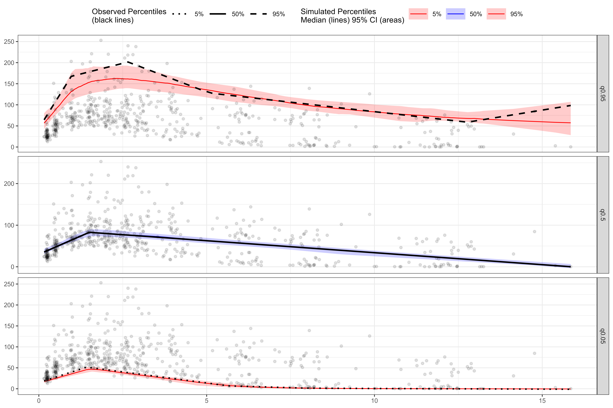
Including additional thr argument.
observed(obs_data, x = TIME, y = DV) |>
simulated(sim_data, y = DV) |>
binning(bin = "headtails", thr = 0.55) |>
plot()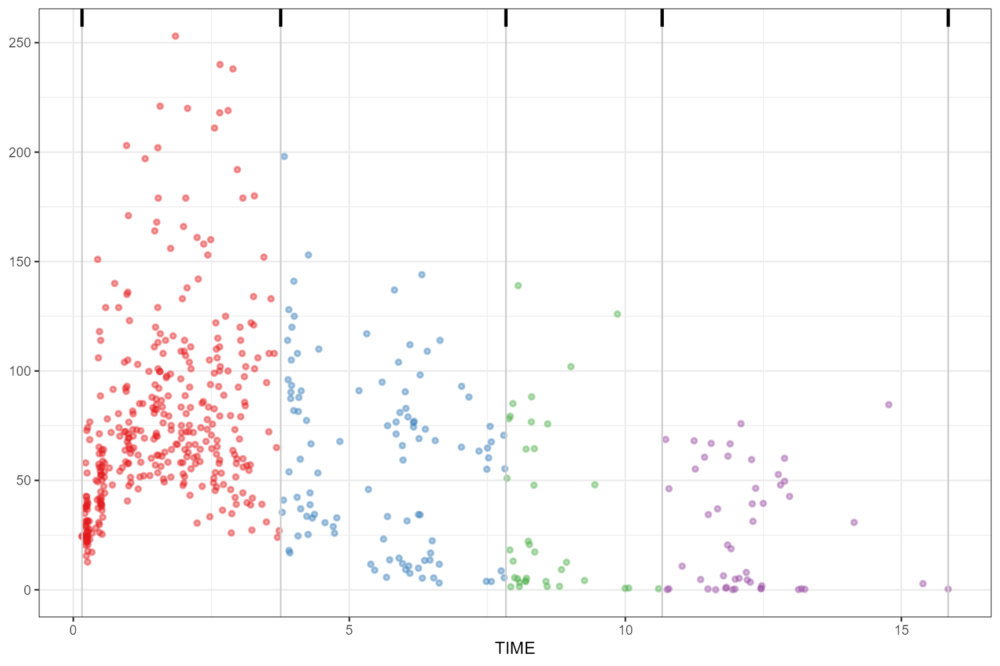
maximum
observed(obs_data, x = TIME, y = DV) |>
simulated(sim_data, y = DV) |>
binning(bin = "maximum") |>
plot()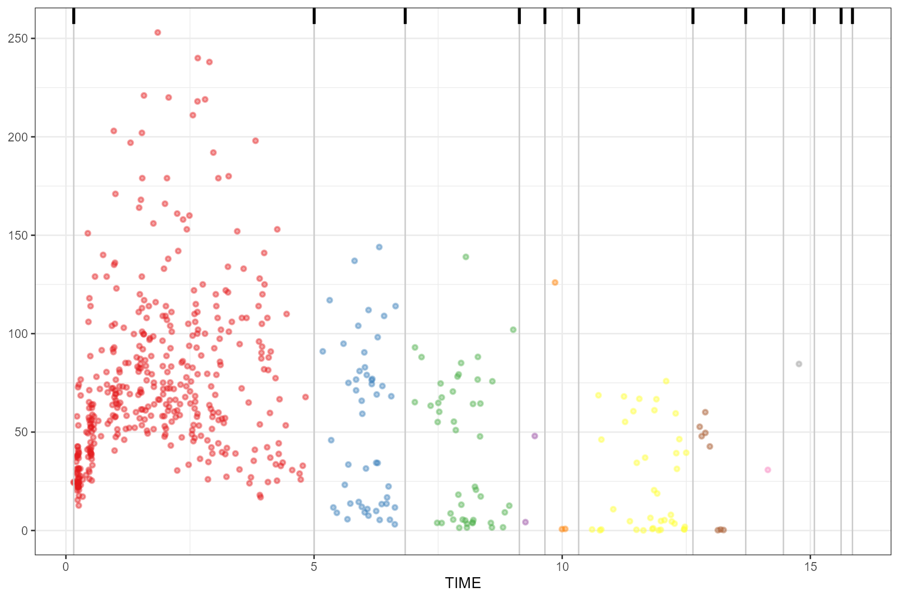
Including additional nbins argument.
observed(obs_data, x = TIME, y = DV) |>
simulated(sim_data, y = DV) |>
binning(bin = "maximum", nbins = 7) |>
plot()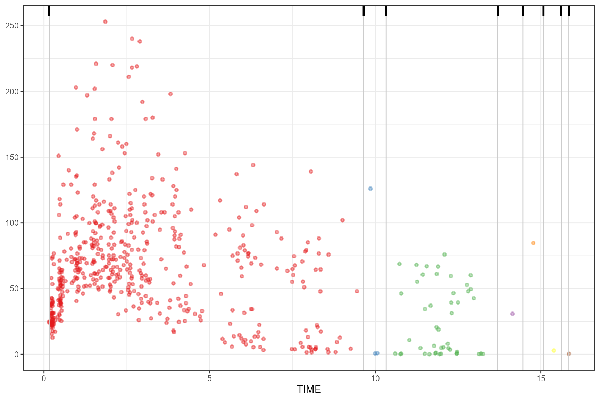
box
observed(obs_data, x = TIME, y = DV) |>
simulated(sim_data, y = DV) |>
binning(bin = "box") |>
plot()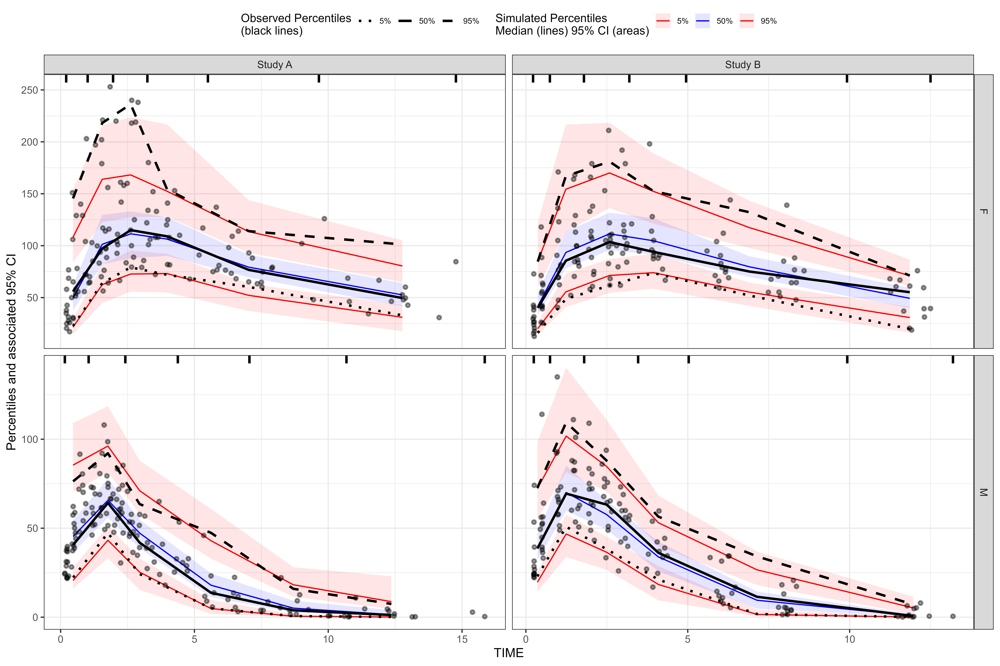
Including additional iqr_mult and type
argument.
observed(obs_data, x = TIME, y = DV) |>
simulated(sim_data, y = DV) |>
binning(bin = "box", iqr_mult = 4) |>
plot()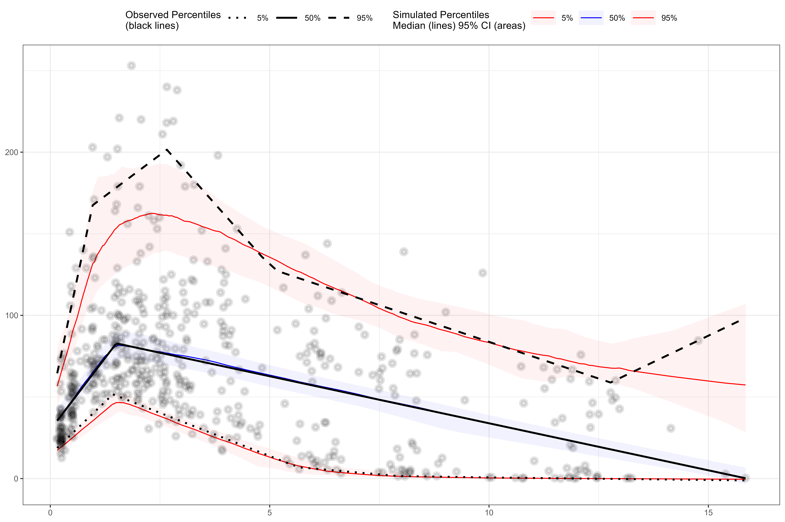
# additional (quantile) type arg
observed(obs_data, x = TIME, y = DV) |>
simulated(sim_data, y = DV) |>
binning(bin = "box", type = 3) |>
plot()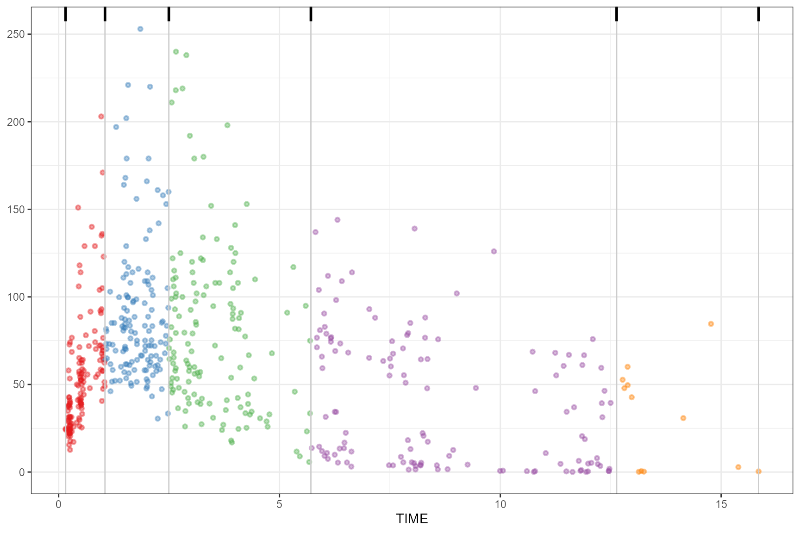
Additional flexibility for binless() + predcorrect()
Users may now execute predcorrect() either before, or
after calling binless(loess.ypc=TRUE). Previously, you were
required to execute predcorrect() before
binless(loess.ypc=TRUE), otherwise you’d receive an
error.
The following code below produces equivalent output:
observed(obs_data, x = TIME, y = DV ) |>
simulated(sim_data, y = DV) |>
stratify(~ GENDER) |>
predcorrect(pred=PRED) |> #before binless()
binless(loess.ypc=TRUE) |>
vpcstats() |>
plot()
observed(obs_data, x = TIME, y = DV ) |>
simulated(sim_data, y = DV) |>
stratify(~ GENDER) |>
binless(loess.ypc=TRUE) |>
predcorrect(pred=PRED) |> #after binless()
vpcstats() |>
plot()tidyvpc 1.3.0
An overview of updates to plot() function in
tidyvpc v1.3.0
Set plot output dimensions:
knitr::opts_chunk$set(fig.width=12, fig.height=8, dpi = 300) One sided stratify() formula uses facet_wrap()
library(tidyvpc)
library(magrittr)
obs_data <- obs_data[MDV == 0]
sim_data <- sim_data[MDV == 0]
vpc <- observed(obs_data, x=TIME, y=DV) %>%
simulated(sim_data, y=DV) %>%
stratify(~ GENDER) %>%
binless() %>%
vpcstats()
plot(vpc)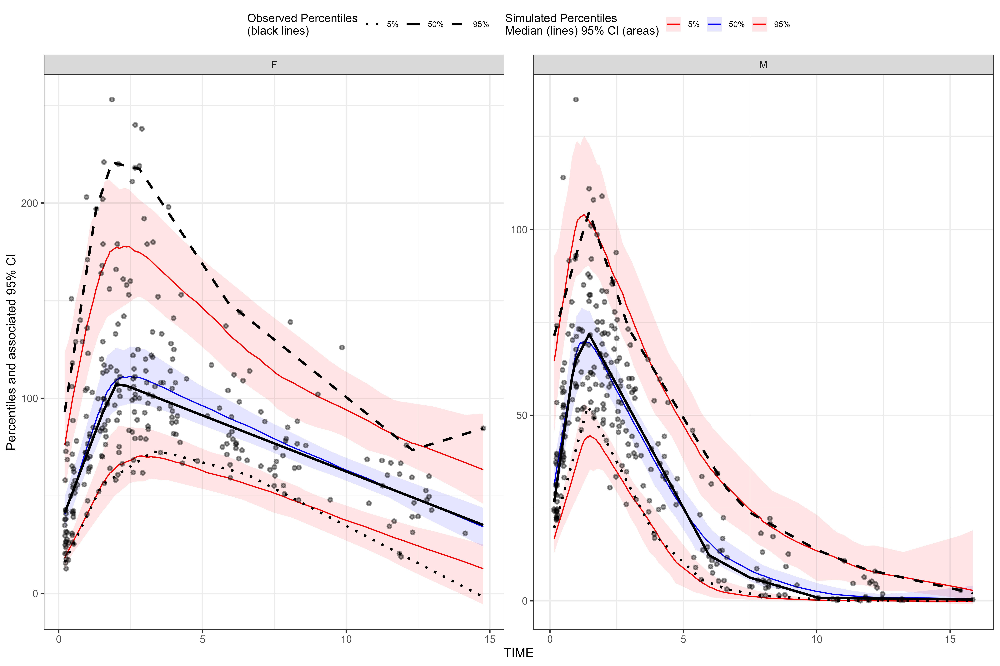
vpc <- observed(obs_data, x=TIME, y=DV) %>%
simulated(sim_data, y=DV) %>%
stratify(~ GENDER + STUDY) %>%
binning(bin = "jenks", nbins = 8) %>%
vpcstats()
plot(vpc)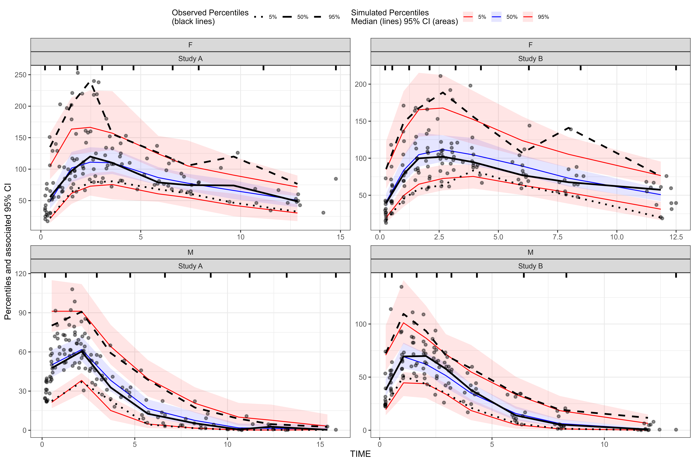
Two-sided formula uses facet_grid()
vpc <- observed(obs_data, x=TIME, y=DV) %>%
simulated(sim_data, y=DV) %>%
stratify(GENDER ~ STUDY) %>%
binning(bin = "kmeans", nbins = 6) %>%
vpcstats()
plot(vpc)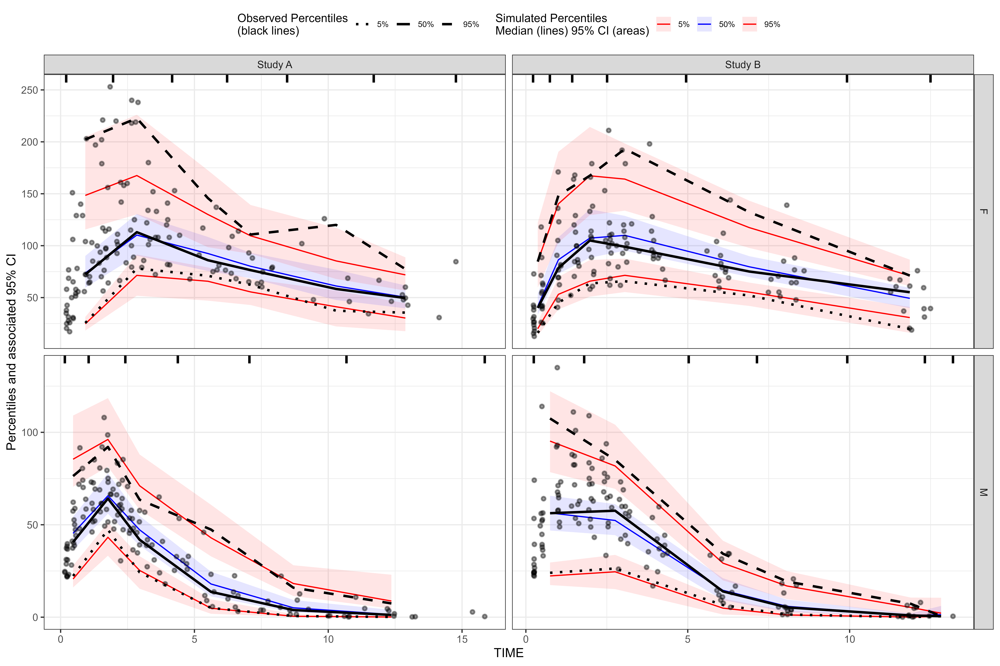
Using facet = TRUE argument
We can use facet = TRUE argument to facet continuous VPC by quantile or facet categorical VPC by predicted probability.
vpc <- observed(obs_data, x=TIME, y=DV) %>%
simulated(sim_data, y=DV) %>%
binless() %>%
vpcstats()
plot(vpc, facet = TRUE, point.alpha = 0.1, point.size = 1, ribbon.alpha = 0.2)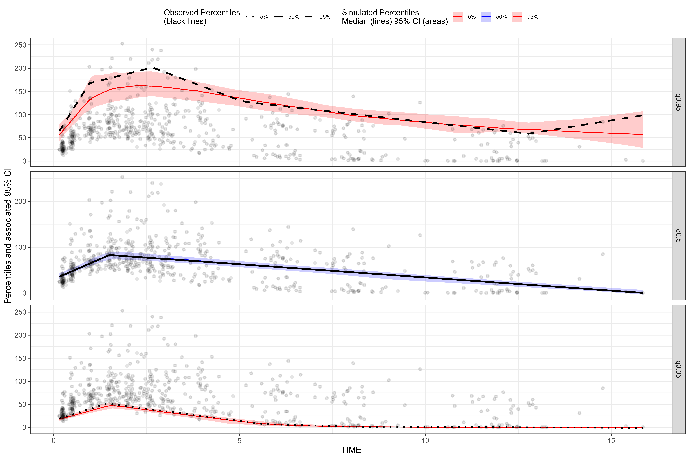
vpc <- observed(obs_cat_data, x = agemonths, yobs = zlencat) %>%
simulated(sim_cat_data, ysim = DV) %>%
binless() %>%
vpcstats(vpc.type = "categorical")
plot(vpc, facet = TRUE, legend.position = "bottom")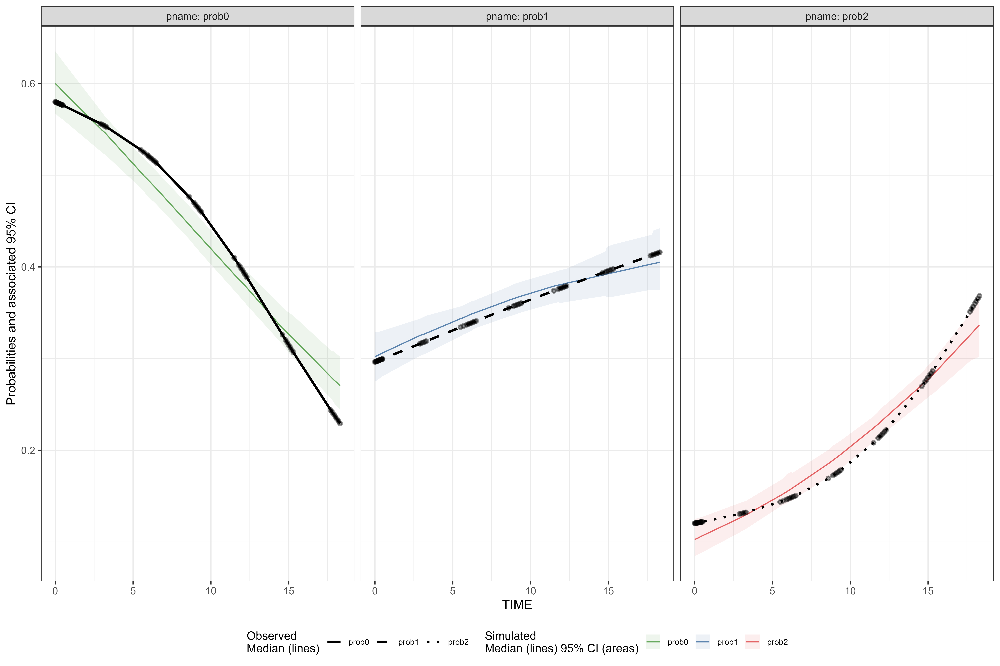
Changing point size, point alpha, point shape, point stroke, and ribbon alpha
Setup categorical VPC.
vpc <- observed(obs_cat_data, x = agemonths, yobs = zlencat) %>%
simulated(sim_cat_data, ysim = DV) %>%
binning(bin = round(agemonths, 0)) %>%
vpcstats(vpc.type = "categorical")Adjust point size.
plot(vpc, point.size = 4)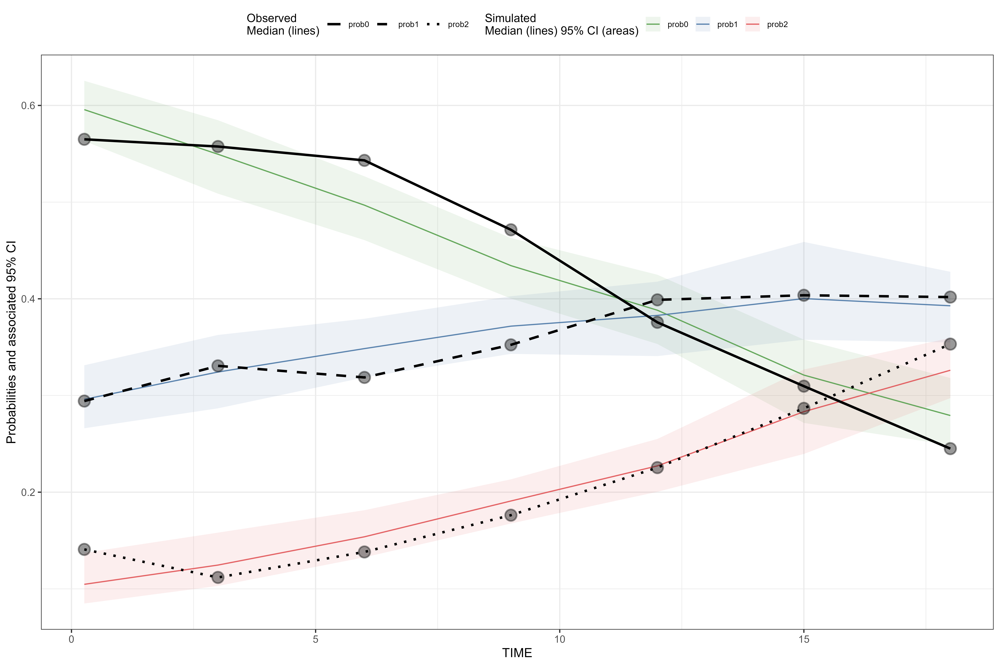
Setup continuous VPC.
plot(vpc, point.size = 1.5, point.stroke = 2.5, point.alpha = 0.1, ribbon.alpha = 0.05)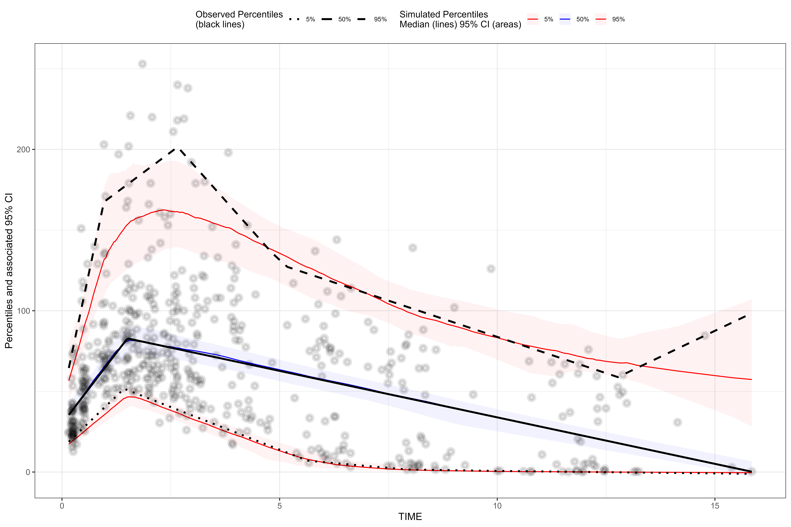
plot(vpc, point.size = 5, point.stroke = 0.3, point.shape = "triangle")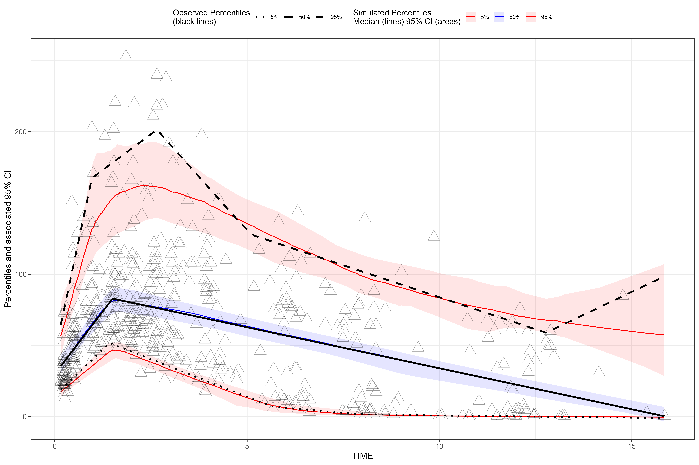
plot(vpc, point.size = 7, point.shape = "square-fill", point.alpha = 0.1, ribbon.alpha = 0.5)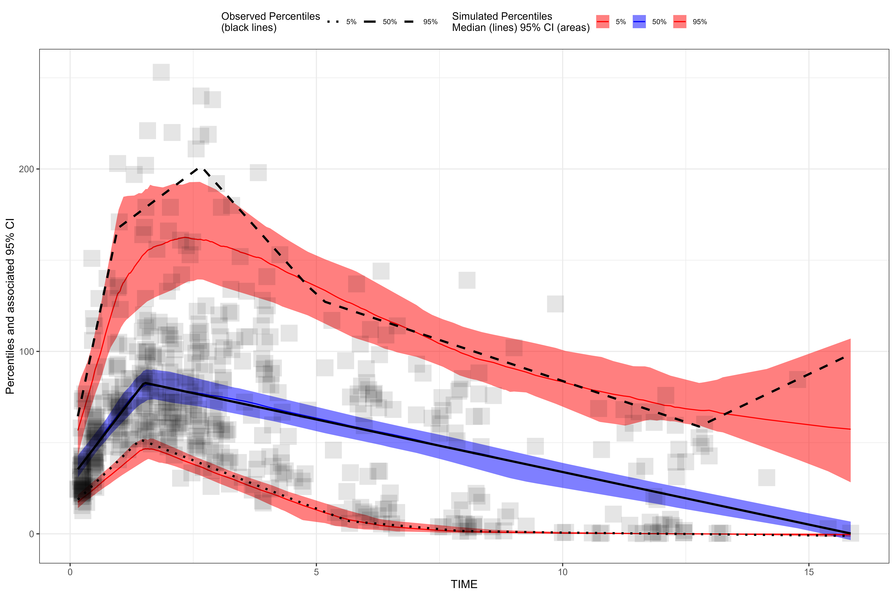